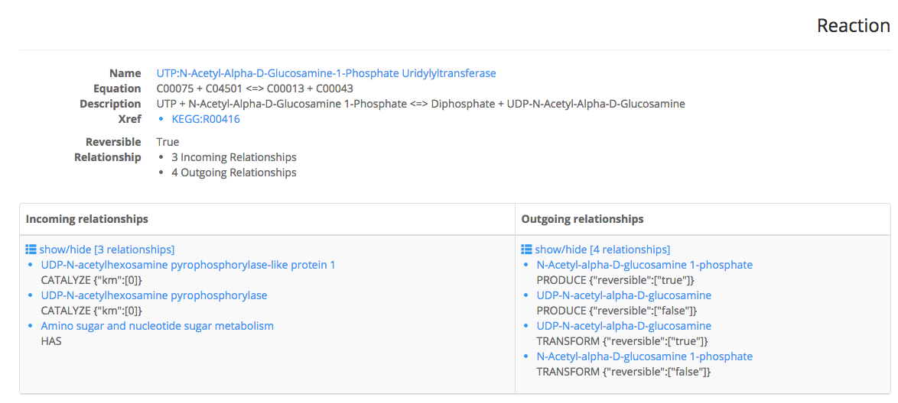

Tutorials
This page provides step-by-step instructions to use the three mains functions of grinn.
SEARCH
SEARCH is to query for elements such as metabolites, proteins, genes and metabolic pathways.
1) SEARCH for 6 metabolites by
name
, each keyword is separated with a new line.NOTE: Grinn supports search by other database ID (or InChI for the metabolite).

2) SEARCH result is a table of matched keywords with the list of incoming and outgoing relationships of the queried keywords. Click name will direct to information page.
NOTE: Information of incoming and outgoing relationships includes element name, relationship type and relationship property (if exist).
3) This figure shows the detail information of a selected reaction.
BUILD
BUILD connects the given metabolites together based on the following relationships: biochemical reaction, enzyme catalysis, encoding gene and metabolic pathway
PAIR
PAIR generates an integrated network by connecting the given metabolites to proteins, genes and pathways